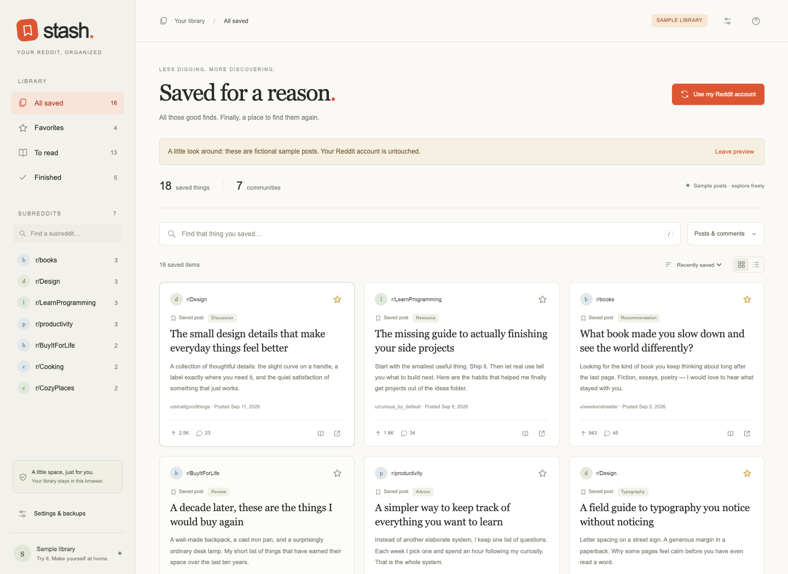
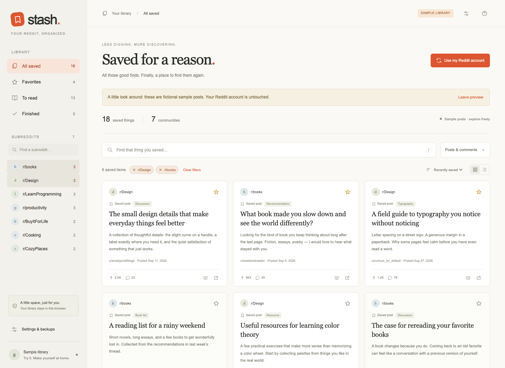
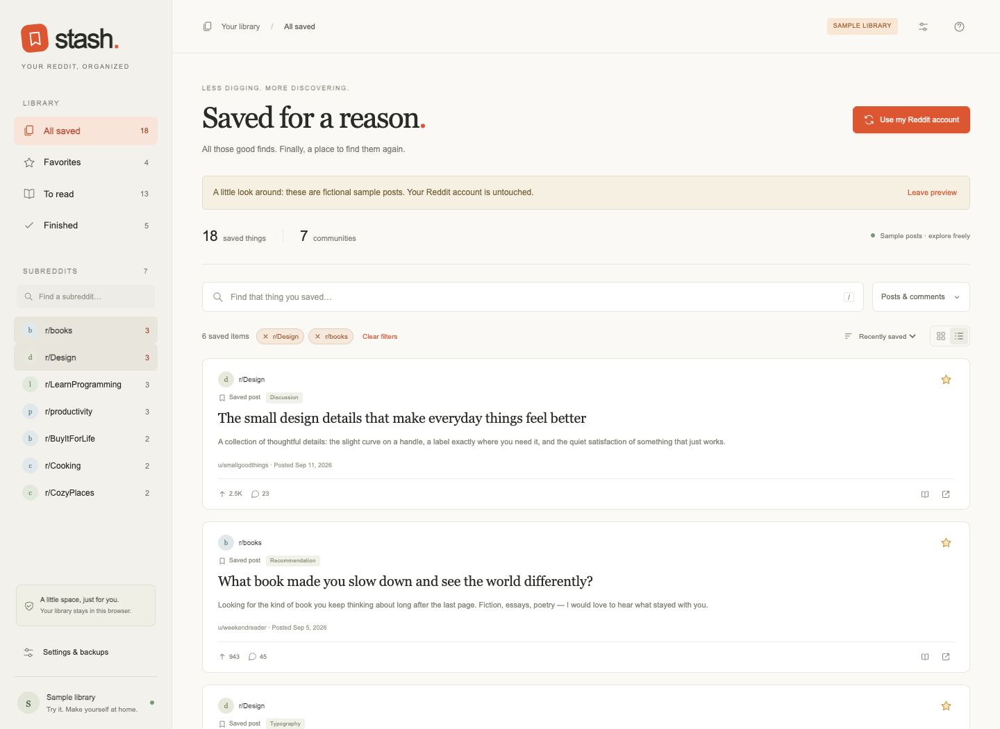
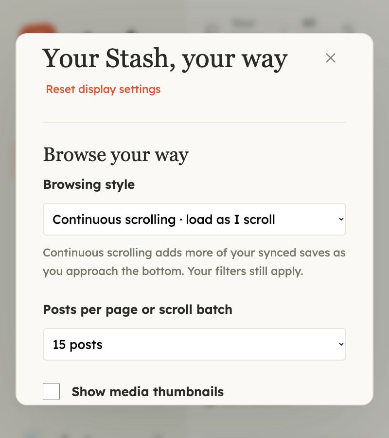

Turn your saved posts and comments into a searchable library. Filter by subreddit, keep your favorites close, and finally get through your reading list.
Free to use, modify, and share under the MIT license. Created by Arthit Napradit. Install from GitHub in Chrome 120 or newer.

Screenshots show Stash’s fictional sample library.
Titles, post text, saved comments, subreddits, and authors.
Pick one community or several and narrow from there.
Star the best finds. Move the rest from To read to Finished.
Your library lives in this Chrome profile. No Stash account.
Type a few words and Stash matches all of them against titles, post text, saved comments, subreddits, and authors. Select one subreddit or several, and the other filters narrow whatever is selected.

Search plus two subreddit filters, narrowed to six items.
Star an item to keep it in Favorites without touching its saved status on Reddit. Everything else waits in To read until you mark it Finished yourself.
Library sidebar: Favorites, To read, Finished.
A starred card, saved status on Reddit unchanged.
Switch between a grid of cards and a full-width list. Then set the display size, reading font, page size, paged or continuous browsing, and optional thumbnails.

List view

Reading settings
Saved text, favorites, and reading status stay in Chrome’s local storage for this profile. No Stash account, no hosted backend, no analytics.
Local does not mean nothing leaves your machine: sync and unsave go to Reddit, and thumbnails load from Reddit’s image servers when enabled. Cached text stays searchable offline; media may not.
Export a Stash JSON file from Settings & backups. Importing merges the same account’s items and never changes your Reddit saves.
Fictional example posts, kept separate from your real library. No account requests run in sample mode.
Download Stash from GitHub, unzip it, and load the extension folder in Chrome. Chrome 120 or newer.
Stash uses the Reddit session already in this Chrome profile. No Stash account, no password, no API key.
Sync is manual. Keep the library tab open until it finishes; closing it keeps the last saved library.
While there is no Chrome Web Store listing, Stash loads as an unpacked extension:
1. Open Stash on GitHub, choose Code → Download ZIP, and unzip it. Keep the extension folder somewhere permanent.
2. Open chrome://extensions and enable Developer mode.
3. Click Load unpacked and select the extension folder, the one containing manifest.json.
4. Pin Stash from Chrome’s Extensions menu, then sign in to Reddit in the same profile and click Sync Reddit.
To update, replace the files in the same folder, click Reload on chrome://extensions, then reopen the Stash tab. Reloading keeps your local library; uninstalling or clearing its data does not.
No. Reddit may return only a limited portion of your saved history. Stash follows every pagination cursor Reddit offers and reports how many items it fetched, but it cannot recover saves Reddit does not expose. Items missing from a later sync stay in your library with a Previously cached label, listed after the current results.
Cached text stays searchable without a connection and the bundled fonts load locally; thumbnails and media need a connection or a cached copy. Sync is never automatic: you click Sync Reddit, and it runs in the library tab, so keep that tab open until it completes. Retries respect short Reddit rate-limit delays and otherwise stop with a readable error.
No. There is no separate account, no sign-up, and no API key. Stash uses your existing Reddit login in the same Chrome profile, and your library never leaves that profile unless you export a backup yourself.
Display size runs from 100% to 200% and enlarges text, controls, icons, and the sidebar together. There are six reading fonts, with a separate choice for post titles or Match reading font; Atkinson Hyperlegible and Lexend are bundled and work offline. Page size can be 15, 30, 60, or 100 items, with paged browsing or continuous scrolling. Reset display settings restores the original size and fonts without clearing your library or other preferences.
Only when you explicitly confirm Unsave from Reddit, which removes the item from Reddit and your local copy after checking which account is signed in. Starring, reading status, and importing a backup never change anything on Reddit.
Uninstalling the extension or clearing its data deletes the local library, so export a backup first. Backups are ordinary unencrypted JSON files saved wherever you choose, containing cached text, favorites, and reading status. Importing merges the same account’s items and is processed locally.
A secondary feature on www.reddit.com. When a RedGIFs embed reports a loading error, Stash can try Reddit’s own retained copy of that video in the post or feed card, and a Play Reddit copy button is available for manual retries. It works only when Reddit still provides a playable copy, previews may be shorter or silent, and it does not repair RedGIFs. Automatic playback starts muted; Original player switches back. Old Reddit is not supported by this control.
No. Stash is an independent extension and is not affiliated with, endorsed by, or sponsored by Reddit. It calls Reddit’s session-authenticated JSON endpoints with your existing browser login, which relies on Reddit continuing to permit that access. It does not bypass Reddit access restrictions and is not a guarantee of API availability.
More detail on storage, requests, and permissions is in the privacy notice.
All those good finds deserve somewhere to be found again. Get Stash for free, explore the source, and make it your own.